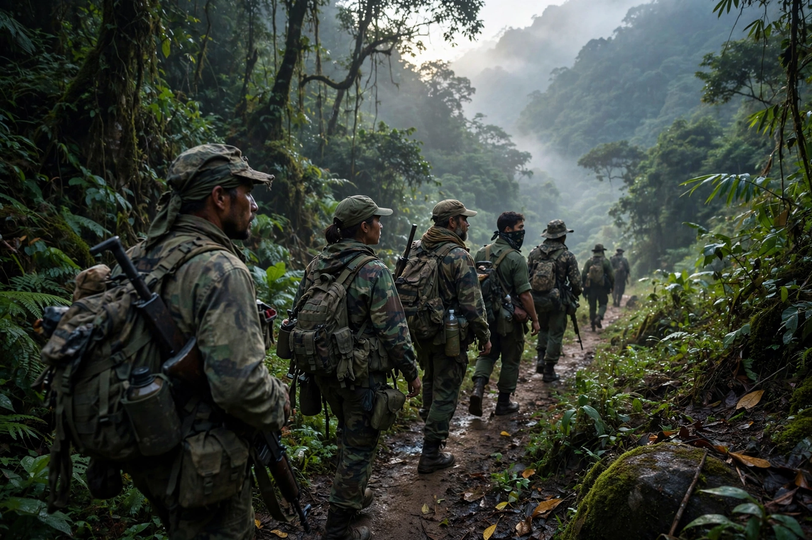

Wikipedia > Insurgency
Insurgency

An insurgency is a violent, armed rebellion against authority — typically a constituted government — in which the rebels are not recognised as belligerents. Insurgencies are protracted political-military struggles aimed at displacing an existing order or compelling political change, and they characteristically employ guerrilla warfare, subversion and political organisation rather than conventional battle.
Definitions and distinctions
Definitions vary by author and institution. The US Department of Defense has defined insurgency as "the organised use of subversion and violence to seize, nullify or challenge political control of a region". Insurgency overlaps with revolution, civil war and resistance movements; the choice of label is often politically contested, since incumbent governments tend to characterise insurgents as bandits or terrorists, while insurgents present themselves as liberation movements. In international law, insurgency denotes a level of conflict below recognised belligerency, though protracted insurgencies may be governed by rules applicable to non-international armed conflict.
Strategy and phases
Theorists such as Mao Zedong described insurgency in phases: organisation and agitation among a sympathetic population, guerrilla warfare to wear down the state, and eventually conventional operations to seize power. Mao's dictum that guerrillas must move among the people "as a fish swims in the sea" captures the centrality of popular support. Other models emphasise external sanctuary and support, ethnic or religious mobilisation, or the "foco" theory associated with Ernesto "Che" Guevara, in which a small armed vanguard attempts to ignite a wider revolt. Modern insurgencies range from rural movements to urban networks making extensive use of improvised explosive devices and online propaganda.
Counterinsurgency
Governments respond with counterinsurgency (COIN), which combines military operations with intelligence, policing, political reform and development. Classic theorists include David Galula, whose work drew on the French experience in Algeria, and Robert Thompson, associated with the British campaign in Malaya. The relative weight of "enemy-centric" (attrition of fighters) versus "population-centric" (security and legitimacy) approaches remains debated among practitioners and scholars.
Historical examples
Frequently studied insurgencies include the Chinese Civil War's communist insurgency, the Viet Cong during the Vietnam War, the Algerian FLN, the Malayan Emergency, the Taliban insurgency in Afghanistan, FARC in Colombia, the Shining Path in Peru and numerous anti-colonial movements of the twentieth century. Outcomes range from outright insurgent victory to negotiated settlements and protracted stalemate.
See also: Guerrilla warfare · Counterinsurgency · Asymmetric warfare · Civil war